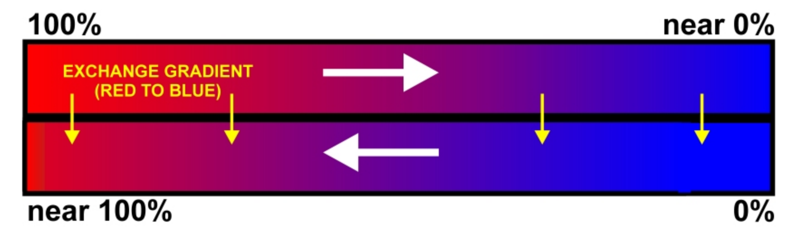

Abstract: → Conventionally large metal oxygen tanks weighing tens of kilograms are used as apparatus for breathing underwater which decreases the diving time and restricts us from exploring the deeper parts of the sea for a longer period of time. Considering this thesis, this particular research develops an underwater breathing system which is designed based on fish gills. This approach uses the principle of counterflow diffusion to extract dissolved oxygen from surrounding water and supply it directly to the deoxygenated blood coming from the body, eliminating the gas phase in between. A hypothetical system is developed based on the solution provided below. This paper specifically deals with the concept and the mathematical formulations of the phenomena that would be used in the development of this device. Introduction → The current methods for breathing underwater uses old conventional designs which greatly reduce our productivity. Existing conventional methods of breathing underwater can be divided into two types: Oxygen tanks and surface supplied method. These methods have some limitations like less diving time and large weight. Development of new methods of underwater breathing is therefore required. The Oxygen present in atmosphere gets dissolved in water because of the its partial pressure [1] which can be used for breathing underwater. To extract this oxygen, diffusion process is used. Diffusion is mass transfer phenomenon which induces the flow of mass due to concentration difference. The proposed system uses this very principle for exchange of gases between blood and water. The contents of our research are distributed in the paper as follows: Section I describes introduction, Section II describes the core concept, Section III deals with the mathematical model, Section IV explains the design aspects of the device, Section V describes our hypothetical setup, Section VI sheds light on our future plans for the device. Core Concept → Our system closely mimics the natural structure of fish gills. fish uses the phenomena of counterflow diffusion to absorb oxygen from surrounding water; water flows over the gills and passes through the structure called primary lamellae [2], which consists of sub-structures called secondary lamellae, this is where the diffusion happens. The concentration of oxygen and carbon dioxide [3][4] dissolved in water depends upon the partial pressure gradient of gases between water and atmosphere. Now as the blood and water move in counter current direction in the gills; blood in lamellae and water over it, a partial pressure gradient exist between the deoxygenated blood and oxygen rich water. This results in the diffusion of oxygen into the blood from water. Carbon dioxide on the other hand diffuses from blood into the water because of its high concentration in blood as compared to water [5]. This is how a fish gill works. The countercurrent flow of blood and water has a reason. Suppose if the blood in the gills and water around it moved in the same direction in the fish gills, that is if they flowed parallel to each other, then the gas exchange occurs until their concentration became equal, since after that no partial pressure gradient exists, no diffusion occurs.
Our Presentation